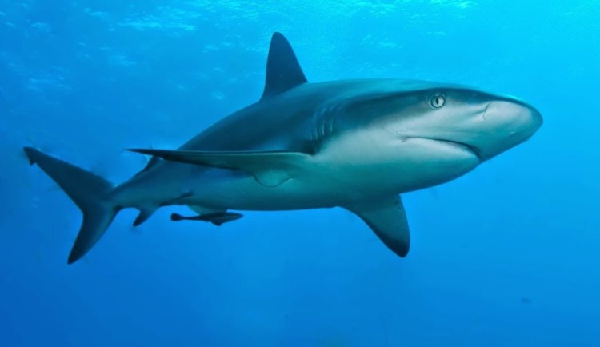

Ikan Hiu adalah sekelompok (superordo Selachimorpha) ikan dengan kerangka tulang rawan yang lengkap dan tubuh yang ramping. Mereka bernapas dengan menggunakan lima liang insang (kadang-kadang enam atau tujuh, tergantung pada spesiesnya) di samping, atau dimulai sedikit di belakang, kepalanya. Hiu mempunyai tubuh yang dilapisi kulit dermal denticles untuk melindungi kulit mereka dari kerusakan, dari parasit, dan untuk menambah dinamika air. Mereka mempunyai beberapa deret gigi yang dapat digantikan.
Hiu mencakup spesies yang berukuran sebesar telapak tangan. Hiu pigmi, Euprotomicrus bispinatus, sebuah spesies dari laut dalam yang panjangnya hanya 22 cm, hingga hiu paus, Rhincodon typus, ikan terbesar yang mampu tumbuh hingga sekitar 12 meter dan yang, seperti ikan paus, hanya memakan plankton melalui alat penyaring di mulutnya. Hiu banteng, Carcharhinus leucas, adalah yang paling terkenal dari beberapa spesies yang berenang di air laut maupun air tawar (jenis ini ditemukan di Danau Nikaragua, di Amerika Tengah) dan di delta-delta.